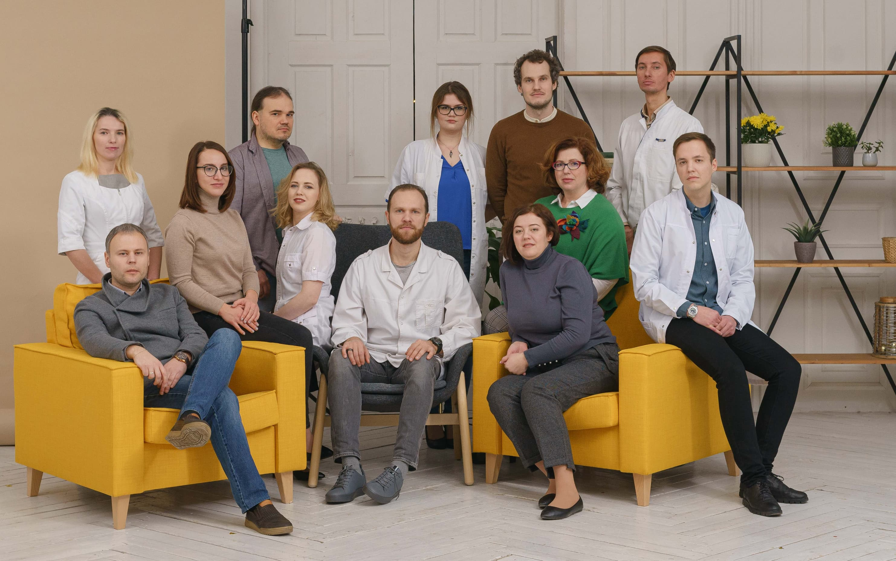
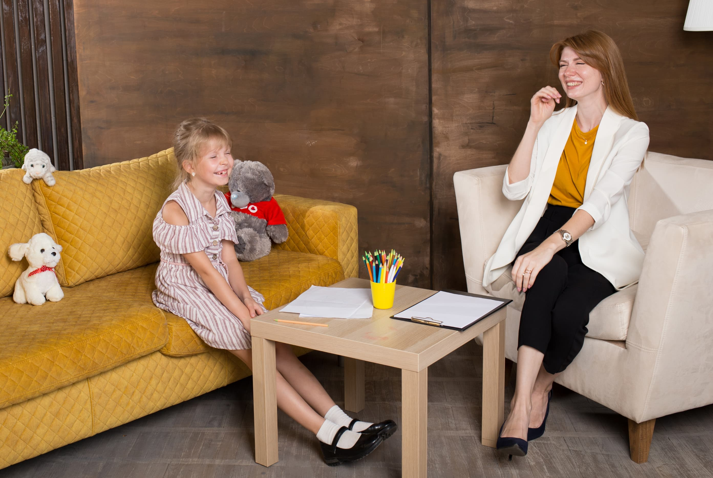
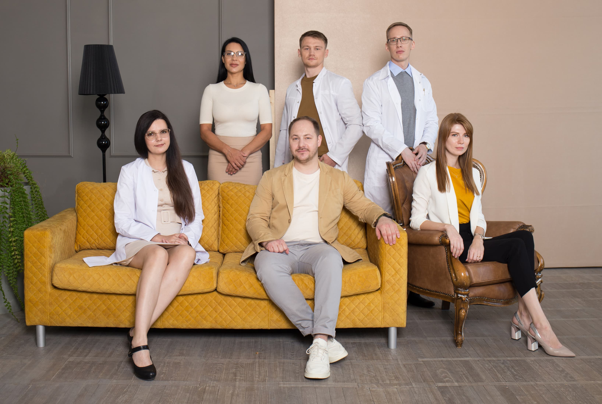
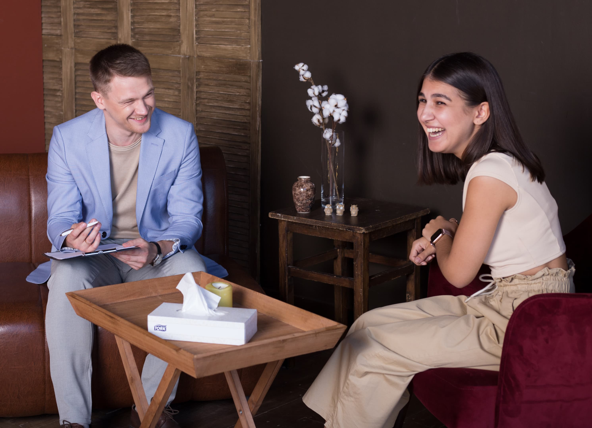

Карьера в Нейро-Пси
Мы ищем психологов, терапевтов и врачей-психиатров, которым близки наши ценности и подход к работе. Если вы такой специалист, приходите к нам.

О клинике
Крупная специализированная клиника. Работаем в пяти городах: Самаре, Нижнем Новгороде, Екатеринбурге, Краснодаре и Москве.
Психологический центр и психиатрическая клиника. «Нейро-пси» сочетает в себе психологический центр и психотерапевтическую клинику с возможностью психиатрического наблюдения и лечения. Обычно к нам обращаются пациенты всех возрастов при любых проблемах психического спектра.
Коллегиальное ведение «сложных» пациентов. Если пациент имеет коморбидную патологую, личностные нарушения, выраженную социальную дисфункцию, то специалисты ведут его коллегиально. Этот подход хорошо отработан и используется во всех филиалах клиники.

Методы работы
Психофармакотерапия. Используем регламентированную стандартами психофармакотерапию.
Психотерпевтические методы класса II (B) и выше. В настоящий момент этому требованию соответствует признанная во всем мире когнитивно-поведенческая психотерапия, КПТ (англ. Cognitive Behavior Therapy, CBT) и её разновидности:
- Схематерапия (Schematherapy),
- Терапия выбором (Choice theory),
- Терапия принятия и ответственности (Acceptance and commitment therapy, ACT),
- Терапия, ориентированная на сострадание (Compassion focused therapy, CFT).
В нашей практике существуют также некоторые другие узко-специализированные научно-обоснованные методы.
Классические методы. Вполне естественно, что мы используем некоторый инструментарий методов, считающихся классическими. Например, образы и метафора — отличные способы терапевтической коммуникации.

Факты о работе
Заботимся о сотрудниках. У нас практически нет текучки. Если вас приняли в коллектив, то это всерьёз и надолго. Мы сотрудничаем с лучшими клиниками, врачами и юристами. Что бы не случилось в вашей жизни, можете рассчитывать на нашу помощь и поддержку.
Помогаем в развитии. Мы поощряем неформальные общение специалистов, так как убеждены, что это отличный способ обмена опытом и рождения новых идей. Супервизия может быть творческой! Внутри коллектива не бывает конкуренции, вы всегда можете рассчитывать на консультацию коллег в сложных рабочих моментах.
Минимум бюрократии. Сотрудники сами выбирают время и продолжительность своего отпуска. А свобода выбора профессиональных подходов ограничена лишь рациональными и этическими аспектами. Если вы работаете с нами, мы уверены в вашей человечности.
Миссия
Специалисты «Нейро-пси» находятся в непрерывном поиске новых способов лечения и психокоррекции. Мы разбираемся в доказательной медицине, регулярно обращаемся к первоисточникам, используем только рациональный подход и новейшие данные и много практикуем.

Как устроен процесс найма
Если вы из другого города, то все этапы можно пройти онлайн. При успешном прохождении мы перевозим кандидатов в город, где у нас есть клиника, оплачиваем квартиру на три месяца, берём на себя расходы по переезду и заранее формируем спрос на консультации.
Заявка и личное знакомство
Вы отправляете заявку и сопроводительное письмо через специальную форму. Мы смотрим на основное образование, опыт работы в рациональных методах терапии и сопроводительное письмо.
В приоритете специалисты с опытом от трёх лет, готовые много работать, с навыками решения проблем, выходящих за границы рабочего сеттинга, эмоционально взрослые, умеющие справляться с аффектом. Если кандидат нас заинтересовал, мы связываемся, знакомимся и предлагем пройти на следующий этап.
Видеоответ на кейс и заполнение опросника
Высылаем кейс терапевтического случая по специализации и даём 30 минут на подготовку к ответу, затем просим записать и прислать видео. Опросник, составленный нашими ведущими специалистами, заполняется кандидатами самостоятельно.
Кейс позволяет понять базовое умение концептуализировать, а опросник — выявить профессиональные и личные ценности, ориентиры и стиль мышления.
Совместные первичные консультации, ко-терапия и супервизия
Кандидат присутсвует на первичных консультация и ведет клиентов в ко-терапии, совместно с нашими специалистами. Здесь нам нужно увидеть работу человека с реальными клиентами на практике.
Наши ведущие специалисты и коллективы разных клиник подключают кандидата к нашим интервизиям и супервизиям по видеосвязи. Он участвует во всех событиях клиники вместе со всеми, обсуждая случаи из реальной практики коллег.
Испытательный срок
Размещаем на специалиста на сайте, приглашаем клиентов на первичные консультации. Через месяц оформляем как штатного сотрудника.

HR-специалист Нейро-Пси